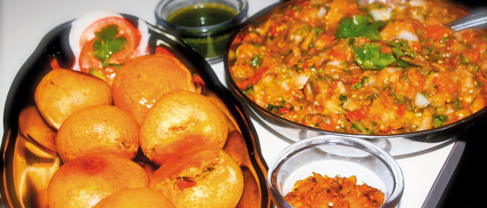

Climate in Bihar : Bihar is one of the coldest reagions in India with average temperature of only 26°c. The best time for travelling is october to april
Ashoka lion Pillar & stuba : It is situated in vaishali . It earned fame as birth place of last Jain Tirthankar lord mahavira.
Sher Shah Suri Tomb Sasaram : Built in 1S45AD in memory of Emperor Sher Suri , this tomb is an excellent example of Indo - Islamic architecture in India.

Cuisine : Some of the best items from the platter of bihar are Litti chokha , dal pitha , Kheer Makhana , Thekhua / khajuria , dal puri , parwal ki Mithai , chana ghugni & Khaja
Chhath Festival : It is 6 days festival in which sun god is worshipped & is the most important part of the bihar's culture.
Kanwae Lake Bird Sanctury , Begusarai : It is India's largest predshwater oxbow lake. It is situated i Begusarai , Ksnmar lake bird sanctury is reckonedd to be haven for 60 spexies of migratory birds.
Madhubani Art : It is also known as Mithila Painting.This art is done by the use of fingers , twigs , brushes , nib - pens & Matchsticks using natural dyes & pigments .
LIMITED OFFERS :
1: 4 Days 3 Nights [Bihar tour + stay + food + transport] only at 39,990/-
2: 3 Days 2 Nights [Bihar tour + stay + food + transport] only at 19,990/-
For more details / bookings reach out to this mail ID: tpt travels @ gmail.com